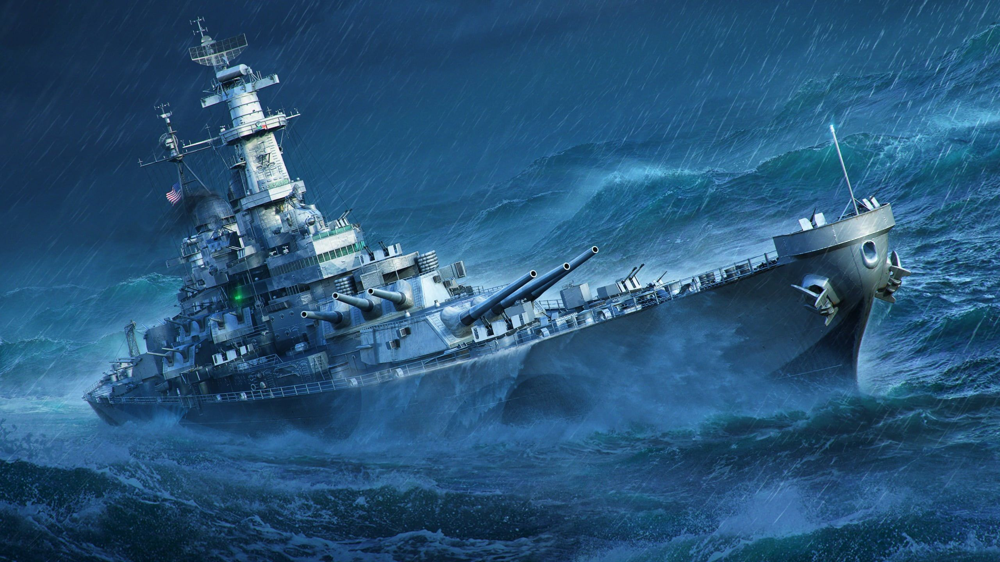

Название новости

5. Кооперативный или соревновательный режим: Игроки могут объединяться в команды, чтобы справляться с вызовами шторма, или же конкурировать друг с другом за ресурсы и достижения. 6. Навигация и выживание: Игрокам придется использовать свои навыки навигации и выживания, чтобы найти безопасное место или выжить в открытом море, используя ограниченные ресурсы. 7. Элементы стратегии: Успех в режиме "Океанский шторм" требует стратегического мышления и планирования — от выбора маршрута до управления ресурсами и взаимодействия с другими игроками. Этот режим создает уникальный игровой опыт, сочетая элементы приключения, стратегии и выживания в условиях природного катаклизма, что делает его привлекательным для любителей экшена и приключений.
Режим "Океанский шторм" — это захватывающий и динамичный игровой режим, который предлагает игрокам уникальный опыт, погружая их в атмосферу бушующего океана. В этом режиме игроки сталкиваются с различными вызовами и элементами, которые создают ощущение настоящего морского шторма. Вот основные характеристики этого режима: 1. Сложные погодные условия: Игроки будут испытывать сильные ветры, высокие волны и дождь, что делает управление судном или персонажем более сложным. Погодные эффекты могут влиять на видимость и маневренность. 2. Погодные эффекты: В режиме "Океанский шторм" используются реалистичные визуальные и звуковые эффекты, такие как гремящие громы, свист ветра и шум волн, создающие атмосферу напряженности. 3. Морские существа: Игроки могут встретить различных морских обитателей, таких как акулы, медузы или даже мифические создания, которые могут представлять как угрозу, так и возможность для взаимодействия. 4. Задачи и квесты: В этом режиме могут быть предложены специальные задания, связанные с выживанием в условиях шторма, исследованием затонувших кораблей или поиском редких ресурсов на дне океана.
